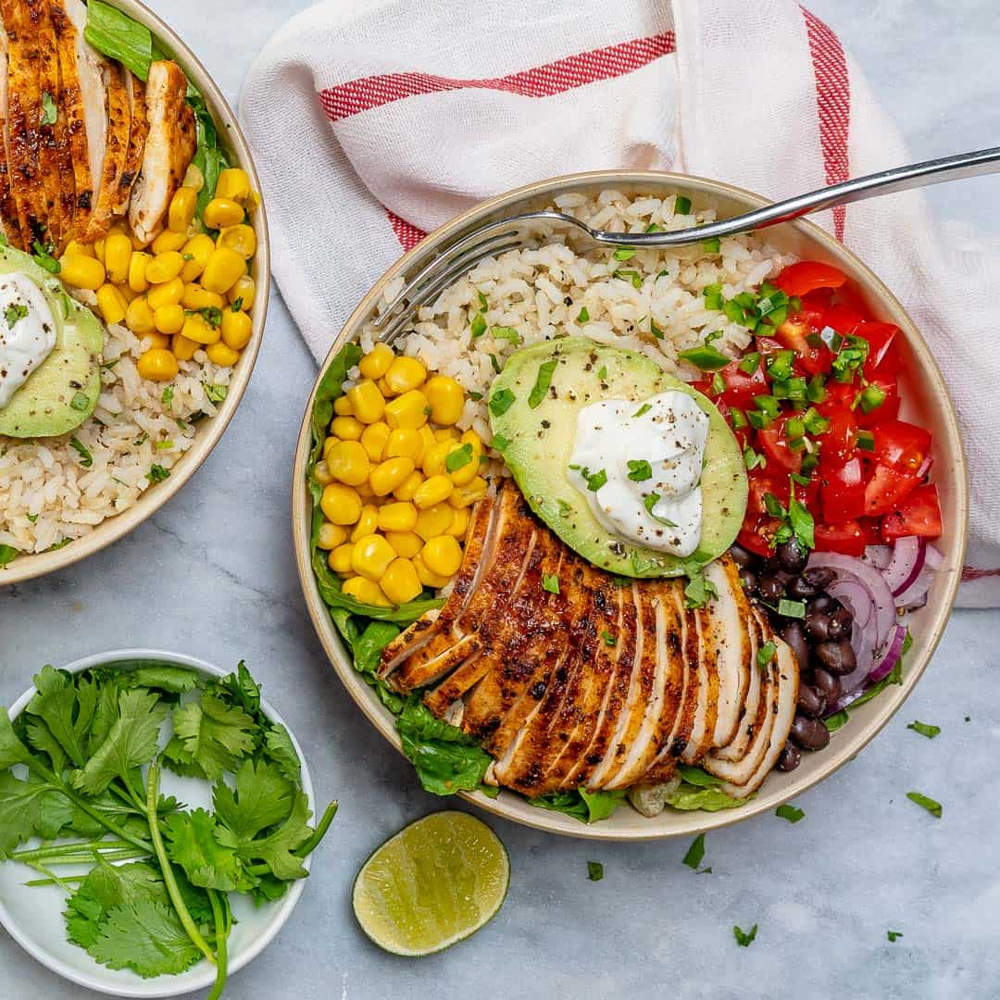

Burrito Bowl

Description
Burrito Bowls are basically the guts of a burrito – chicken, rice, beans, salsa, and guacamole – scooped inside of a bowl versus a tortilla, so they’re gluten free and lower in carbs than a traditional burrito.
Ingredients
- 1 cup cooked white rice
- 4 oz grilled chicken breast, sliced
- 1 cup black beans, drained
- 1/2 cup salsa
- 1/2 cup guacamole
Steps
- Put rice on bowl
- Arrange everything else over the rice separately
- Enjoy!